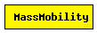
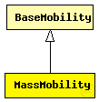

This documentation is released under the Creative Commons license
This documentation is released under the Creative Commons licenseThis is a random mobility model for a mobile host with a mass. It is the one used in "Optimized Smooth Handoffs in Mobile IP" by Perkins & Wang.
"An MH moves within the room according to the following pattern. It moves along a straight line for a certain period of time before it makes a turn. This moving period is a random number, normally distributed with average of 5 seconds and standard deviation of 0.1 second. When it makes a turn, the new direction (angle) in which it will move is a normally distributed random number with average equal to the previous direction and standard deviation of 30 degrees. Its speed is also a normally distributed random number, with a controlled average, ranging from 0.1 to 0.45 (unit/sec), and standard deviation of 0.01 (unit/sec). A new such random number is picked as its speed when it makes a turn. This pattern of mobility is intended to model node movement during which the nodes have momentum, and thus do not start, stop, or turn abruptly. When it hits a wall, it reflects off the wall at the same angle; in our simulated world, there is little other choice."
This implementation can be parameterized a bit more, via the changeInterval, changeAngleBy and changeSpeedBy parameters. The parameters described above correspond to the following settings:
NOTE: Does not yet support 3-dimensional movement.
See also: ConnectionManager
Author: Emin Ilker Cetinbas, Andras Varga
The following diagram shows usage relationships between types. Unresolved types are missing from the diagram. Click here to see the full picture.
The following diagram shows inheritance relationships for this type. Unresolved types are missing from the diagram. Click here to see the full picture.
| Name | Type | Description |
|---|---|---|
| BaseMobility | simple module |
Module which is responsible for mobility related information like position and movement BaseMobility itself defines a static mobility pattern (means only a position, no movement). Mobility modules which extend from this module will define more complex movement patterns. |
| Name | Type | Default value | Description |
|---|---|---|---|
| notAffectedByHostState | bool | true | |
| coreDebug | bool | false |
debug switch for the core framework |
| constraintAreaMinX | double | -1m/0 |
min x position of the constraint area, unconstrained by default (negative infinity) |
| constraintAreaMinY | double | -1m/0 |
min y position of the constraint area, unconstrained by default (negative infinity) |
| constraintAreaMinZ | double | -1m/0 |
min z position of the constraint area, unconstrained by default (negative infinity) |
| constraintAreaMaxX | double | 1m/0 |
max x position of the constraint area, unconstrained by default (positive infinity) |
| constraintAreaMaxY | double | 1m/0 |
max y position of the constraint area, unconstrained by default (positive infinity) |
| constraintAreaMaxZ | double | 1m/0 |
max z position of the constraint area, unconstrained by default (positive infinity) |
| initialX | double | uniform(constraintAreaMinX, constraintAreaMaxX) |
initial x coordinate of the nodes' position |
| initialY | double | uniform(constraintAreaMinY, constraintAreaMaxY) |
initial y coordinate of the nodes' position |
| initialZ | double | uniform(constraintAreaMinZ, constraintAreaMaxZ) |
initial z coordinate of the nodes' position |
| initFromDisplayString | bool | false |
initial position will be read from display string |
| debug | bool | false |
debug switch |
| changeInterval | double |
frequency of changing speed and angle (can be random) [s] |
|
| changeAngleBy | double |
change angle by this much (can be random) [deg] |
|
| speed | double |
speed (can be random, updated every changeInterval) [m/s] |
|
| updateInterval | double |
time interval to update the hosts position [seconds] |
| Name | Value | Description |
|---|---|---|
| display | i=block/cogwheel | |
| class | MassMobility |
// // This is a random mobility model for a mobile host with a mass. It is the // one used in "Optimized Smooth Handoffs in Mobile IP" by Perkins & Wang. // // "An MH moves within the room according to the following pattern. It moves // along a straight line for a certain period of time before it makes a turn. // This moving period is a random number, normally distributed with average of // 5 seconds and standard deviation of 0.1 second. When it makes a turn, the // new direction (angle) in which it will move is a normally distributed // random number with average equal to the previous direction and standard // deviation of 30 degrees. Its speed is also a normally distributed random // number, with a controlled average, ranging from 0.1 to 0.45 (unit/sec), and // standard deviation of 0.01 (unit/sec). A new such random number is picked // as its speed when it makes a turn. This pattern of mobility is intended to // model node movement during which the nodes have momentum, and thus do not // start, stop, or turn abruptly. When it hits a wall, it reflects off the // wall at the same angle; in our simulated world, there is little other // choice." // // This implementation can be parameterized a bit more, via the changeInterval, // changeAngleBy and changeSpeedBy parameters. The parameters described above // correspond to the following settings: // - changeInterval = normal(5, 0.1) // - changeAngleBy = normal(0, 30) // - speed = normal(avgSpeed, 0.01) // // NOTE: Does not yet support 3-dimensional movement. // @see ConnectionManager // @author Emin Ilker Cetinbas, Andras Varga // simple MassMobility extends BaseMobility { parameters: @class(MassMobility); bool debug = default(false); // debug switch volatile double changeInterval @unit(s); // frequency of changing speed and angle (can be random) [s] volatile double changeAngleBy @unit(deg); // change angle by this much (can be random) [deg] volatile double speed @unit(mps); // speed (can be random, updated every changeInterval) [m/s] double updateInterval @unit(s); // time interval to update the hosts position [seconds] }
This documentation is released under the Creative Commons license